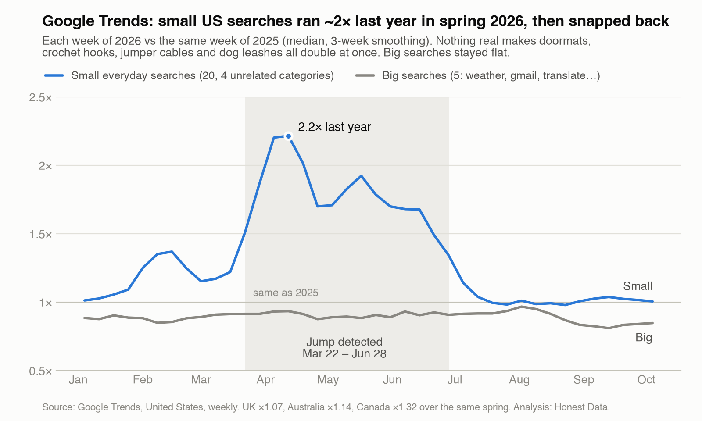

Honest Data · updated 2026-10-26
Google Trends said small US searches roughly doubled this spring. It was probably the data.
Our research write-up, October 2026. The weekly data is free (CC BY): research folder. We re-run the check every morning: Is Google Trends glitching today?
If you used Google Trends for US keyword or product research this spring, check your numbers: for small terms, some may be wrong, and not because of your code.
From March 22 to June 21, 2026, small US searches on Google Trends ran 1.5 to 2.2 times their level of the same week in 2025, easing to 1.34 by June 28. Big searches did not move with them. By August the small ones were back to normal.

What I measured
I tracked 20 unrelated, everyday US searches in four groups (household, hobby, auto/tools, pets and garden), including shower curtain, doormat, dish rack, crochet hook, jigsaw puzzle, jumper cables, wiper blades, dog leash and cat litter. As a contrast I used 5 big searches: weather, gmail, translate, calculator and facebook.
For each term I took every week of 2026 and divided it by the same week of 2025. That cancels seasonality. Then I took the median across each basket. A value of 1.0 means "same as last year".
The weekly medians for the small basket:
- January: about 1.01 to 1.09.
- Late March: 1.50 on March 22, 1.86 on March 29.
- Peak: 2.20 on April 5 and about 2.2 on April 12 (2.215).
- Mid-May: still 1.92 on May 17.
- Late June: 1.49 on June 21, 1.34 on June 28.
- July 12 onward: 1.04, then between 0.98 and 1.04 for the rest of the data (to October 4).
Through the spring (March 22 to June 28) the big basket stayed between about 0.88 and 0.93 and did not move with the small one. Across all of 2026 so far (January 4 to October 4) it sat below 1.0, and it drifted down to about 0.81 in September. I have not looked into that.
One more caveat: the small basket also rose in February, to 1.37 in mid-February, then fell back to 1.15 by March 1. That is a smaller bump and I did not investigate it. The spring episode is the big one.
What I think happened, and what I don't know
A basket that includes doormats, crochet hooks and jumper cables doubling together in the same weeks is not a plausible change in demand. It looks like a change in how Google sampled low-volume US searches. I have not found any note from Google about it, so that is an inference from the pattern, not a confirmed cause. The 2026 values themselves rose, not just the ratio: unrelated keywords like shower curtain, doormat and dish rack roughly doubled together and then fell back.
What it breaks
Anything that compares a window overlapping late March to late June 2026 with another period:
- Growth figures for long-tail terms are distorted: inflated if the window is the later period, deflated if it is the earlier one.
- Peak dates that land inside the window are suspect. In a 12-month US run of 7 keywords, 5 of them "peaked" inside that stretch, coffee and tea included.
- "Breakout" or "trending products" lists built on small terms will favour whatever was measured during those weeks.
- Forecasting models trained on the window learn a doubling that most likely was not real demand.
The biggest terms, like weather and gmail in the big basket, did not show the jump.
How to detect it yourself
You need a control basket: terms that have nothing to do with each other and are about as small as the terms you care about. If unrelated terms jump together, the jump is most likely in Google's data, not in demand for your keyword.
The check is a year-over-year ratio per term, then a median across the basket. Because each ratio compares a term with itself, it does not matter that Trends rescales each request to 100, as long as both years come from the same pull. Use a weekly pull of 2 to 5 years so the earlier year sits in the same series. (Longer pulls come back monthly.)
import pandas as pd
# df: weekly Google Trends values, index = week start (DatetimeIndex),
# one column per control term, each from its own weekly pull of 2-5 years
# (one request per term, so both years share a scale).
# Load it however you like: CSV exports, or pytrends (unofficial,
# rate-limited, can break).
def yoy_median(df: pd.DataFrame) -> pd.Series:
# Trends exports contain "<1" strings; turn them into NaN
df = df.apply(pd.to_numeric, errors="coerce")
df = df.sort_index().asfreq("7D")
prev = df.shift(52) # same week, one year earlier
ratio = df / prev.where(prev > 0) # a 0 last year gives no ratio
return ratio.median(axis=1).dropna()
signal = yoy_median(df)
# Flag weeks where the basket sits far from last year.
# 1.3 is a judgement call; tune it to your basket.
flagged = signal[(signal > 1.3) | (signal < 1 / 1.3)]
print(flagged)
Two details matter. First, shift(52) assumes no gaps in the weekly index, which is why the code calls asfreq("7D") first. 52 weeks is 364 days, so 52 rows back lands on the same week of the previous year.
Second, small terms are coarse. Google reports whole numbers, so a term with a value of 1 or 2 gives a noisy ratio. Use a basket of 15 to 20 terms and a median, not a mean, so a few bad terms do not decide the result.
Keep a big-term basket too. If both baskets move, it may be a real market event. If only the small basket moves, as it did here, suspect the data.
Why comparing many keywords is hard
- 5-term limit. The Google Trends website compares at most 5 keywords per request.
- Per-request rescaling. Each request scales its top keyword to 100. Two requests are on two different scales, so their numbers cannot be put side by side.
- Integer rounding. Next to a big keyword, a small one is rounded down to 0 for the whole year. The data is not just imprecise, it is gone. Put "coffee" and "dandelion coffee" into one comparison and dandelion coffee reads 0 every week.
The fix is to chain overlapping groups. Sort keywords by rough popularity and compare them in groups of similar size, so nothing small sits next to something huge. Each group shares one keyword with the next. The shared keyword appears in both requests, so the ratio between its two readings converts one group's scale into the other's, the way you carry a measurement across overlapping rulers.
The two copies of the shared keyword also give you something useful: any difference beyond what rounding explains is Google's sampling noise, measured directly. That lets you put an error bar on every keyword.
I tested this against a simulated Google with known true values. About 68% of true values landed within ±1σ and 95% within ±2σ, which is what honest error bars should do. In a run of 12 drinks (US, past 12 months), dandelion coffee came out at about 1/4,600th of coffee, to within about 1%.
Disclosure: I built a tool that does this, and it costs $0.005 per keyword (up to 200 keywords per run; keywords with no usable data are free). It chains overlapping groups and returns an error bar per keyword. It also has a lighter built-in glitch check, one extra request with a fixed basket of English control keywords, that flags peaks and growth inside market-wide jumps: Google Trends Scraper: 200 Keywords on One Scale.
Data and method
The weekly numbers behind the chart, and the method, are here: https://github.com/Gwapspec/honest-data/tree/main/research/google-trends-2026-glitch
If you have pulls from this spring, run the control check on them.
Written with AI assistance and checked against the data.